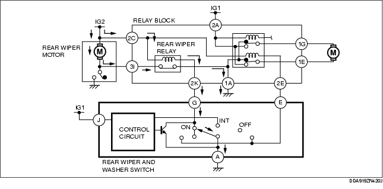

1. When the rear wiper switch moves to the ON position, current flows to the rear wiper relay in the relay block, turning on the rear wiper relay.
2. When the rear wiper relay is on, current flows to the rear wiper motor for continuous operation.
3. When the rear wiper switch returns to the OFF position, the autostop function activates and the wiper stops at the park position.

1. When the rear wiper switch moves to the INT position, current (1) flows from the control circuit.
2. The control circuit intermittently energizes the rear wiper relay in the relay block with current at 10 second intervals. As a result, the rear wiper motor operates intermittently due to the flow of current (2) at 10 second intervals.
3. When the rear wiper switch returns to the OFF position, the autostop function activates and the wiper stops at the park position.

1. When the rear washer switch turns on during continuous rear wiper operation, current (1) flows to the washer relay (rear) in the relay block, turning on the washer relay (rear).
2. When the washer relay (rear) is on, current flows to the washer motor, the washer motor operates and sprays washer fluid from the rear washer nozzle.